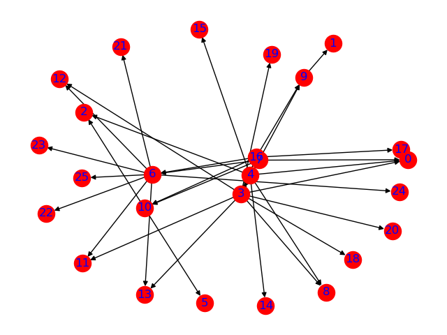

Output Program
Output Program¶
Source Code lengkap dapat dilihat di sini.
Program melakukan proses Web Structure Mining dengan alamat awal https://garuda.ristekdikti.go.id.
Ketika program dijalankan, maka program akan mendownload halaman web dan mencari semua link yang ada pada halaman tersebut. Semua link yang didapat akan dilakukan proses crawling kembali dan dicatat.
Semua catatan mengenai url_sumber dan url_tujuan terdapat pada variabel edgelistFrame. Berikut merupakan beberapa 5 edge teratas:
Setelah semua edge didapat, maka dibuatlah graph berarah dengan memasukkan semua edge yang terdapat di edgelistFrame. Maka akan tampil graph sebagai berikut:

dengan detail node:
Kemudian kita mencari pagerank masing-masing website. Berikut hasil dari pagerank, setelah diurutkan dari yang terbesar ke terkecil.
Dari hasil atas, dapat diketahui bahwa website yang paling penting adalah http://arjuna.ristekdikti.go.id/, dengan PageRank sebanyak 0.293866.